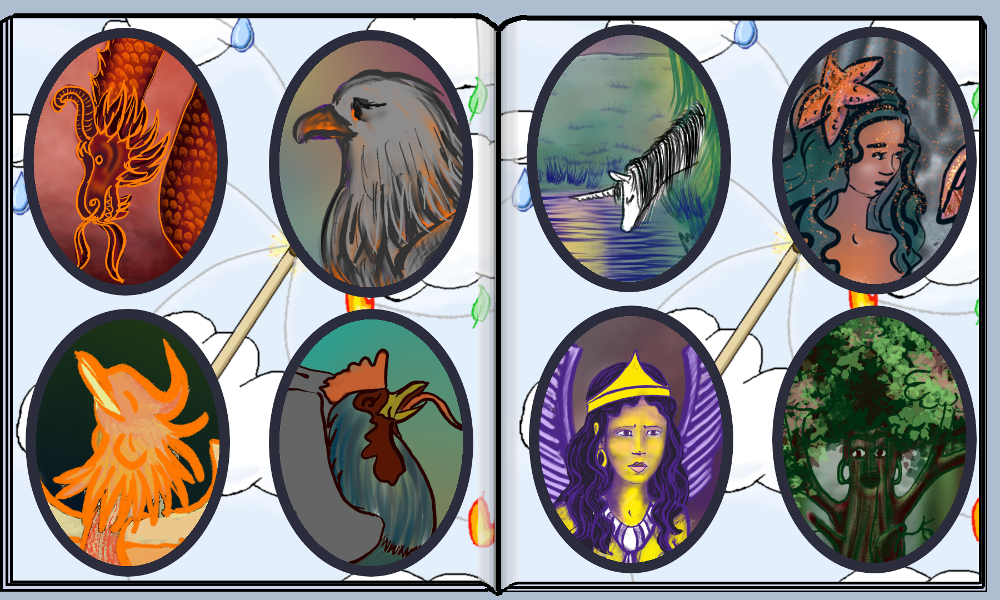

Caractéristiques du jeu
- 2 à 5 joueurs ou plus
- environ 100 min, 75 minutes
pour la variante courte
- jeu en parallèle
- joueurs amateurs/experts
Fairy school est un jeu un
peu
magique.
- C'est un jeu de deckbuilding mais avec un
contrôle
riche et original sur les cartes jouées,
- C'est un jeu compétitif mais où les joueurs sont incités
à collaborer avec leurs voisins,
- C'est un jeu de gestion de resources, mais les resources
sont 5
éléments.
- C'est un jeu qui se joue en parallèle et donc sur lequel il
est
facile d'ajouter des joueurs
|

|